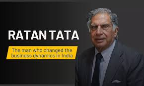

Books Written about Ratan Tata
- Ratan Tata began his career in the Tata Group in 1962. He took over as the Chairman in 1990 and served until his retirement in 2012. During his tenure, he oversaw several successful acquisitions, including the purchase of Jaguar Land Rover and Corus Steel. His leadership has reshaped the Tata Group into a multinational conglomerate.